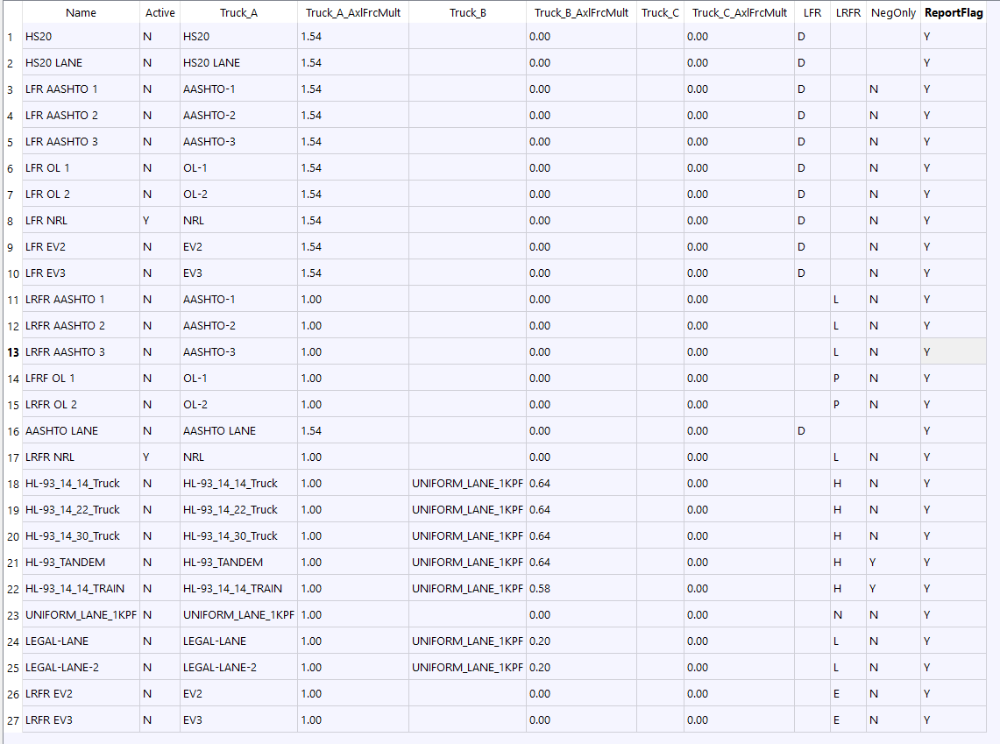

Load Combination Definition
Table tbLoadCombDef
PURPOSE
This table is used to create the set of trucks, factors, and switches that are combined for capacity and rating calculations.
Parameters
Field |
Type |
Units |
Description |
|---|---|---|---|
Name |
text |
Unique name for loading configuration |
|
Active |
chr |
[Y|N] Y=Run this load case. |
|
Truck_A |
text |
First Truck Name |
|
Truck_A_AxlFrcMult |
real |
First Truck’s axle force multiplyer |
|
Truck_B |
text |
Second Truck Name (optional) If used as uniform lane load truck it MUST be named UNIFORM_LANE_1KPF |
|
Truck_B_AxlFrcMult |
real |
Second Truck’s axle force multiplyer (if second truck defined) |
|
Truck_C |
text |
Third Truck Name (optional) If used as uniform lane load truck it MUST be named UNIFORM_LANE_1KPF |
|
Truck_C_AxlFrcMult |
real |
Third Truck’s axle force multiplyer (if third truck defined) |
|
LFR |
text |
[D|P] D=Inventory&Operating P=Overload Inv&Opr |
|
LRFR |
text |
[H|L|P|E|N] (H)HL-93 Design (L)Legal (P)Permit-Overload (E)Emergency (N)Not Rated |
|
NegOnly |
chr |
[Y|N] LRFR Neg only rating flag. |
|
ReportFlag |
chr |
[Y|N] Shall the capacity trace at 10th-points be included with the Summary Report for this load combination? (Default is ‘N’) |
Name
This is a unique name for this combination.
Active
You may only want to run some combinations when analyzing a bridge. Use this option to select which combinations will be analyzed and then only those trucks used in the active combinations will be run.
Truck_A
One or two trucks may be included in a combination. You must define a Truck_A but a second truck is optional. This entry must reference a truck defined in the Truck Definition table.
Truck_A_AxlFrcMult
Enter the multiplier that will be applied to each axle force for Truck_A.
Truck_B
One or two trucks may be included in a combination. You must define a Truck_A but this second truck is optional. This entry must reference a truck defined in the Truck Definition table.
Truck_B_AxlFrcMult
Enter the multiplier that will be applied to each axle force for Truck_B.
Truck_C
This is a special entry for a uniform lane load truck that must be named UNIFORM_LANE_1KPF and defined the Truck Definition table.
Truck_C_AxlFrcMult
Enter the multiplier that will be applied to each axle force for Truck_C.
LFR
When doing a LFR analysis, enter a D or P t specify rating factor to use. D=Inventory&Operating P=Overload Inv&Op
LRFR
When doing a LRFR analysis, H, L, P, E, or N (H)HL-93 Design (L)Legal (P)Permit-Overload (E)Emergency (N)Not Rated
NegOnly
For LRFR set this to “Y” to ONLY rate this combination for negative moment.
ReportFlag
The summary report include the summary, a copy of the input BDF file in fixed field format, and capacity trace at 10th points along a stringer. This capacity trace can get very very large and might not be needed for all active combinations. Set this entry to Y to include the detailed capacity calculations for this combination in the summary report.
Example Entry
